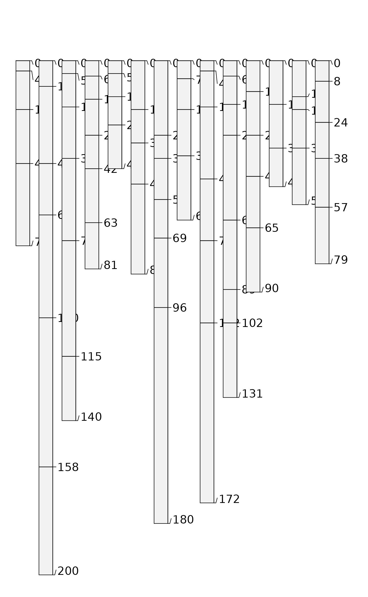
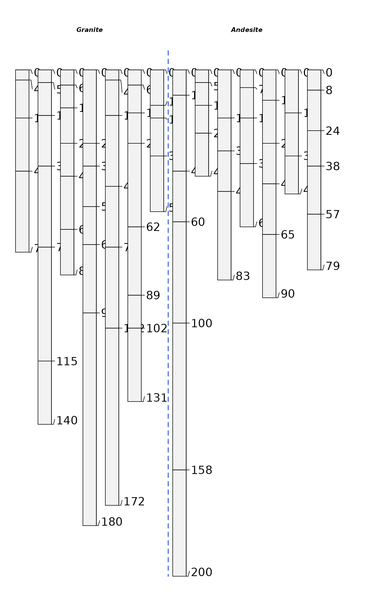
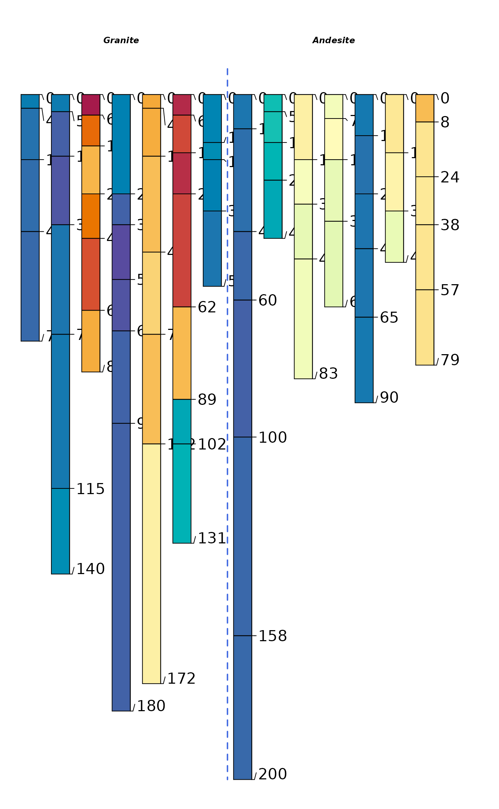

R/data-documentation.R
sierraTransect.RdSoil physical and chemical data associated with two bio-climatic sequences (granitic and andesitic parent material) from the western flank of the Sierra Nevada mountains.
data(sierraTransect)An object of class SoilProfileCollection of length 14.
Original manuscripts and person communication with authors.
These data were assembled from Dahlgren et al. (1997) and Rasmussen et al. (2007), with permission granted by lead authors, by D.E. Beaudette.
R.A. Dahlgren, J.L. Boettinger, G.L. Huntington, R.G. Amundson. Soil development along an elevational transect in the western Sierra Nevada, California, Geoderma, Volume 78, Issues 3–4, 1997, Pages 207-236.
Rasmussen, C., Matsuyama, N., Dahlgren, R.A., Southard, R.J. and Brauer, N. (2007), Soil Genesis and Mineral Transformation Across an Environmental Gradient on Andesitic Lahar. Soil Sci. Soc. Am. J., 71: 225-237.
data(sierraTransect)
# tighter margins
op <- par(mar=c(0,0,0,0))
# quick sketch
plotSPC(sierraTransect, name.style = 'center-center', width=0.3)
# split by transect
par(mar=c(0,0,1,1))
groupedProfilePlot(
sierraTransect, groups='transect',
group.name.offset = -15, width=0.3,
name.style='center-center'
)

# thematic
groupedProfilePlot(
sierraTransect, groups='transect',
group.name.offset = -15, width=0.3,
name.style='center-center', color='Fe_o_to_Fe_d'
)

# horizon boundary viz
sierraTransect$hzd <- hzDistinctnessCodeToOffset(substr(sierraTransect$hz_boundary, 0, 1))
groupedProfilePlot(
sierraTransect, groups='transect', group.name.offset = -15,
width=0.3, name.style='center-center', color='Fe_o_to_Fe_d',
hz.distinctness.offset='hzd')

# split transects
g <- subset(sierraTransect, transect == 'Granite')
a <- subset(sierraTransect, transect == 'Andesite')
g.order <- order(g$elev)
a.order <- order(a$elev)
# order (left -> right) by elevation
par(mar=c(2,0,0,2), mfrow=c(2,1))
plot(g, width=0.3, name.style='center-center', cex.names=0.75, plot.order=g.order)
axis(1, at=1:length(g), labels=g$elev[g.order], line=-1.5)
plot(a, width=0.3, name.style='center-center', cex.names=0.75, plot.order=a.order)
axis(1, at=1:length(a), labels=a$elev[a.order], line=-1.5)
par(op)